02 / Housing / Urban life
City of Angles
Pittsburgh, Pennsylvania — Poiesis II
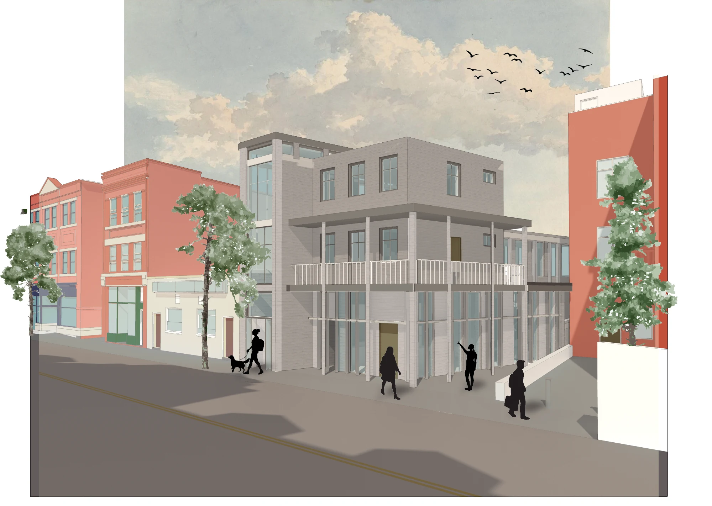
Housing and archival library
A house and archival library respond to the angles of Pittsburgh’s Lawrenceville neighborhood. A diagonal axis organizes circulation, connects Butler Street to Mulberry Way, and brings light through the depth of the building. The project supports an evolving community of visiting scholars, researchers, and authors, placing shared knowledge at the center of domestic life.
Individual academic project. Design, drawings, and renderings: Dawson Duffley.
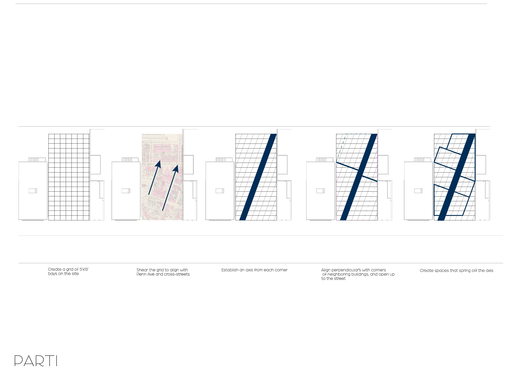
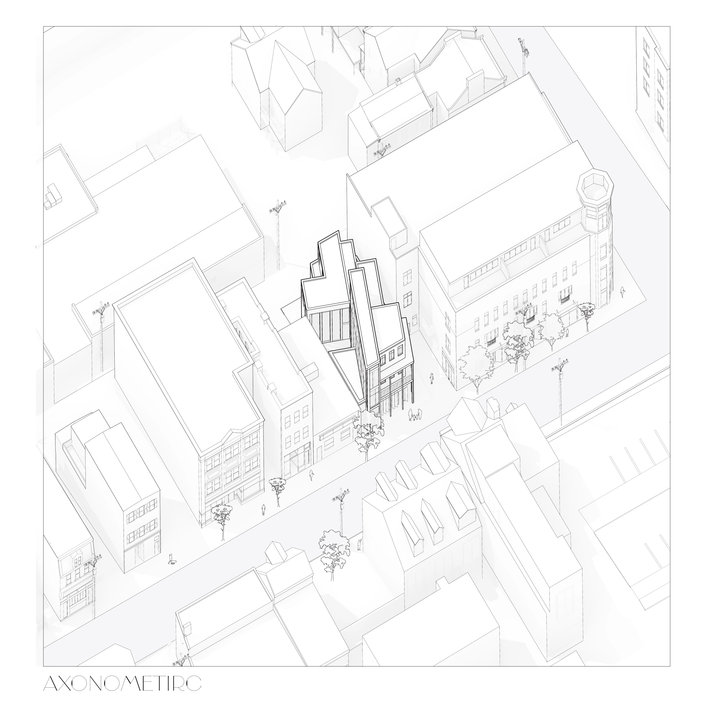
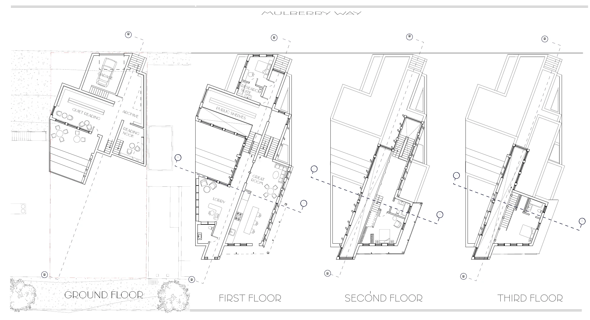
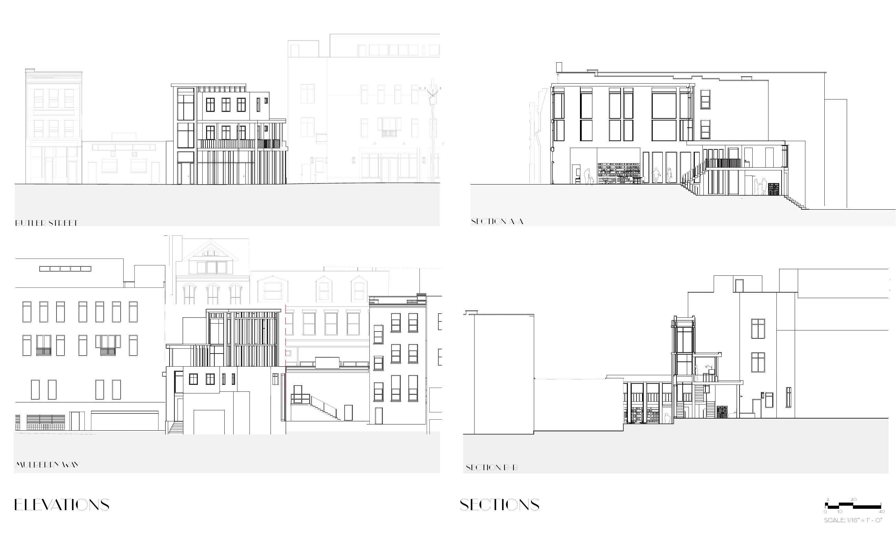
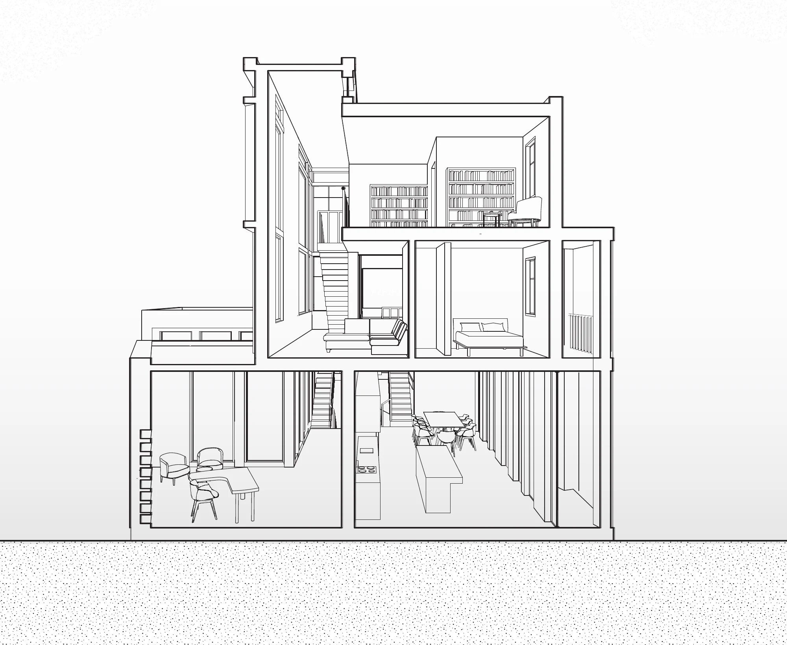
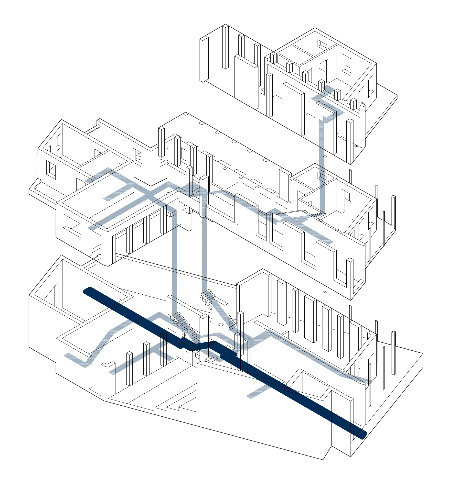
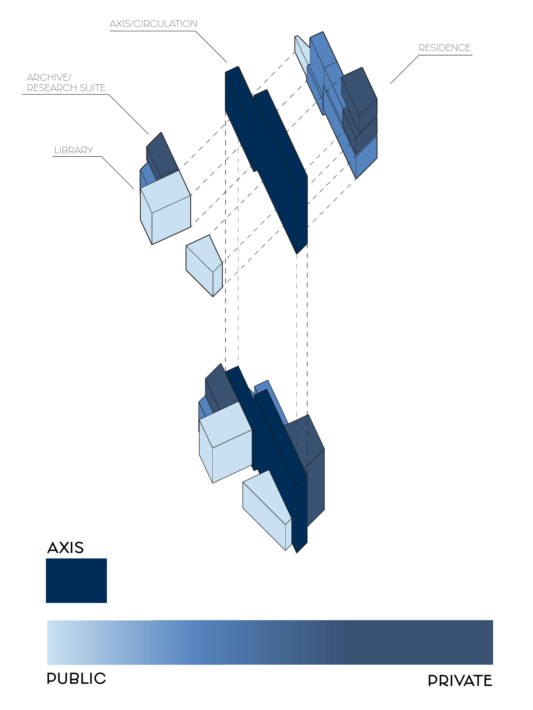
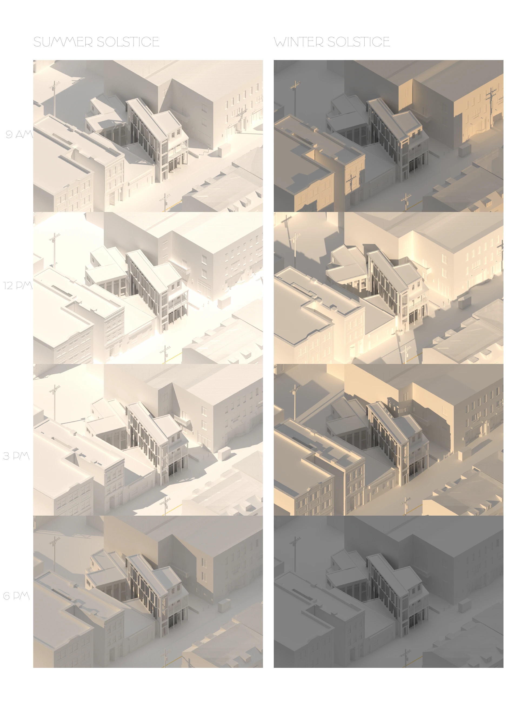
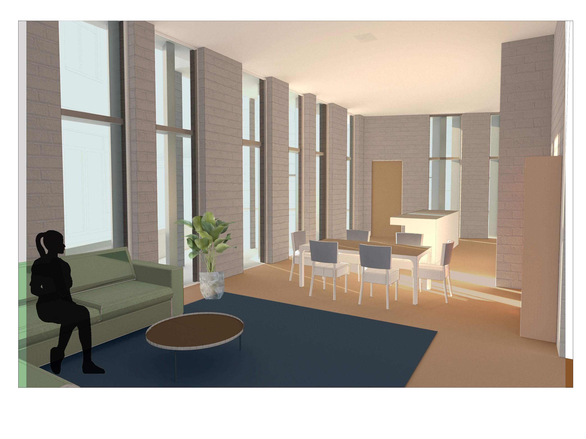
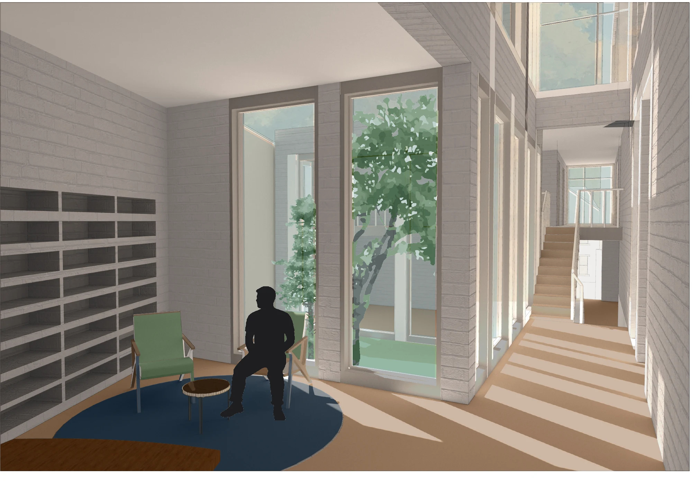